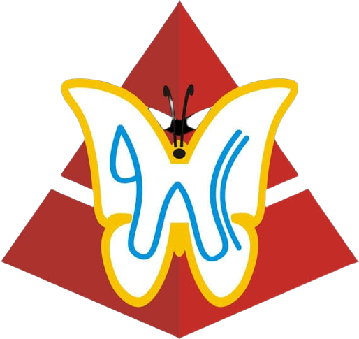

STMIK AL FATH
membangun negri bersama generasi paham teknologi
- Visi
- Misi
- Melaksanakan Pendidikan di Bidang Manajemen & Ilmu Komputer yang Mengikuti Perkembangan IPTEK untuk Memenuhi Kebutuhan Sektor Dunia Usaha dan Industri serta Mencetak Technopreneurship.
- Melaksanakan Kegiatan Penelitian & Pengabdian Masyarakat.
- Menjalin Hubungan Kerjasama dengan Berbagai Lembaga Pendidikan, Lembaga Profesional, Dunia Usaha dan Industri.
- Mencetak Lulusan yang Memiliki Kemampuan Technopreneurship, Menguasai Bahasa Inggris & Wawasan Global.
- Mencetak Sumber Daya Manusia (SDM) yang Religius Berahlakul Karimah, Bermoral & Beretika Berbasis Pesantren.
- Moto
Pada Tahun 2030 Menjadi Perguruan Tinggi yang Unggul dalam Bidang Teknologi Informasi Komputer, Mencetak Technopreneurship yang Menguasai Bahasa Asing Berkarakter Mulia & Religius Berbasiskan Pesantren
TECHNOPRENEURSIP, GLOBAL, RELIGIUS